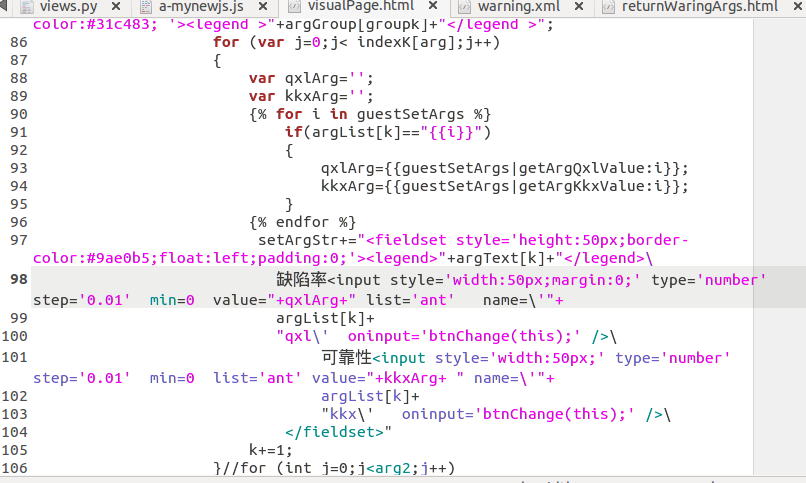

需要传输的是下图中所有的input中客户端设置的数据
整个页面是用js生成，代码不长，但是用了许多拼接，看起来开比较乱，页面的核心就是下面的部分，有一些关键参数部分就不放了，可以跳过这个

下面开始重点，将表单中的数据以json在ajax发送给后端
function btnChange(values) {
var argList=["xxx","xxx","xxx",,
// 。。。这里的关键参数删了
];
var dict = {};
for (var i=0;i<argList.length;i++)
{
dict[argList[i]+"qxl"]=$("input[name="+argList[i]+"qxl]").val();
dict[argList[i]+"kkx"]=$("input[name="+argList[i]+"kkx]").val();
}
console.log(dict);
$.ajax({
beforeSend : function(XMLHttpRequest){
//XMLHttpRequest.setRequestHeader("aadfasdfsdfasdsasasdcccc","ajax");
},
url:"/visualPage/getWarningSet/",
type: "POST",
dataType: "json",
data:dict,
complete: function (data) {
//console.log('aaa')
},
success:function(data){
console.log(data);
// window.open("/visualPage/returnWarning","","width=800,height=600");
// $(".text").text(data.message);
},
});
console.log(values.name); //slice(0,-3)
var warningshow=document.getElementById("warning");
warningshow.style.display='block';
}url为请求的地址，type提交类型(post,get等)，dataType这里用json表示提交的数据格式为json，
data这里是要提交的数据，以字典形式，success为服务器成功响应后要执行的函数，这里的格式和,分割符一定要注意，格式不对不会发送成功
再看视图里面
from django.views.decorators.csrf import csrf_exempt
@csrf_exempt
def getWarningSet(request):
if request.is_ajax():
#print(request.POST)
elename1=[
"xxx","xxx","xxx",
#这里省略关键参数
]
k=0
while k<len(elename1):
startArgsSet[elename1[k]]["qxl"]=request.POST.get(elename1[k]+'qxl', '')
startArgsSet[elename1[k]]["kkx"]=request.POST.get(elename1[k]+'kkx', '')
k+=1
bxml=dicttoxml.dicttoxml(startArgsSet,custom_root='warning')
xml=bxml.decode('utf-8')
dom=parseString(xml)
pxml=dom.toprettyxml(indent=' ')
f=open(os.path.join(settings.BASE_DIR,'visualModule/xmlData/warning.xml'),'w',encoding='utf-8')
f.write(pxml)
f.close()
return 'HTTP_'
is_ajax()可以判断是否是ajax请求，如果前段是用get来发送不用检测直接用request.POST.get（"json中的键值"）即可获取对应数据
一般通过 return JsonResponse(name_dict)这样来响应给前段数据，我这里没有进行这一步，只返回了一个字符串
return 'HTTP_'，这里是直接将数据转换为xml存储到服务器，只是为了序列化用户的设置，会有别的视图函数来专门解析xml到字典发送到前端，所以我使用ajax只是为了实时存储用户设置，并不会立即反馈给用户。
ajax可以用来来传输json，字典，字符串，数组等格式的数据
下面是ajax另一种格式，比上面的格式简化多了
$.get("/add/",{'a':a,'b':b}, function(ret){
$('#result').html(ret);
})还有JavaScript原生的用法，需要的可以自行选择
var xmlhttp;
//创建ajax对象
if (window.XMLHttpRequest)
{// code for IE7+, Firefox, Chrome, Opera, Safari
xmlhttp=new XMLHttpRequest();
}
else
{// code for IE6, IE5
xmlhttp=new ActiveXObject("Microsoft.XMLHTTP");
}
//onreadystatechange 事件中的就绪状态时执行的函数：
xmlhttp.onreadystatechange=function()
{
if (xmlhttp.readyState==4 && xmlhttp.status==200)
{
document.getElementById("myDiv").innerHTML=xmlhttp.responseText;
//xml
xmlDoc=xmlhttp.responseXML;
txt="";
x=xmlDoc.getElementsByTagName("ARTIST");
for (i=0;i<x.length;i++)
{
txt=txt + x[i].childNodes[0].nodeValue + "<br>";
}
document.getElementById("myDiv").innerHTML=txt;
}
}
//向服务器发送请求
xmlhttp.open("POST","ajax_test.html",true);
xmlhttp.setRequestHeader("Content-type","application/x-www-form-urlencoded");
xmlhttp.send("fname=Henry&lname=Ford");